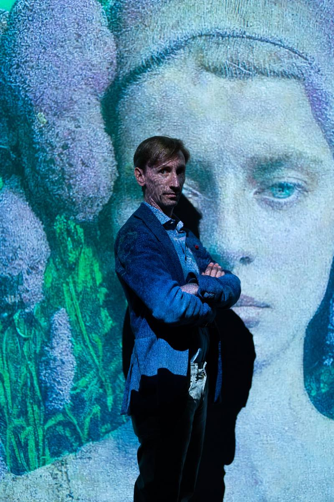

About
Francesco D’Isa (Florence, 1980) is a philosopher, visual artist, and writer. He teaches Philosophy at the Istituto Lorenzo de’ Medici (Florence) and AI Applied to Art at the LABA Academy of Fine Arts (Brescia and Florence). He has published novels, essays, and graphic novels; among his most recent works are Sunyata (2023), an experimental graphic novel created through generative AI, and the essay La rivoluzione algoritmica delle immagini (The Algorithmic Revolution of Images, 2024). His philosophical book L’assurda evidenza, published by Tlon, is slated for translation by Columbia University Press. He serves as Editorial Director of the cultural magazine L’Indiscreto and contributes as an author and illustrator to various international media outlets, publishing in English for The Philosophical Salon, Los Angeles Review of Books, and Philosophy Now. Considered a pioneer of digital and AI art in Italy, his practice develops a distinctive aesthetic grounded in creative prompting and in the valorization of generative errors, framed by his ongoing research on “semantic attractors” in latent space.
Contact: write an email

Exhibitions
Unum, "La grande trama", Museo Nazionale Romano, Palazzo Massimo, Rome
Tokyo Gendai, presented by TAEX, Japan
Latent Rooms, solo show, Rifugio Digitale, Florence
Unum, CVPR 2026 AI Art Gallery, Denver
Contract of Fiction, Gallery P61, Berlin
AI Yoga, Meet Digital Culture Center, Milan
Digital Reform, Scoletta dell'Arte, Venice
The Tilt of Time, IED and Fondazione Palazzo Strozzi, Florence
The full list, with teaching and publications, is in the CV.